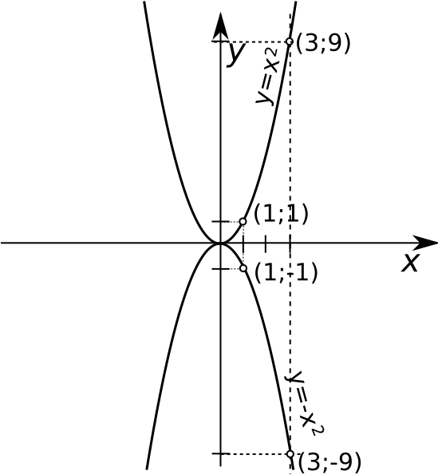

Ruutfunktsiooniks nimetatakse funktsiooni kujul y = x2. Ruutfunktsiooni
graafikuks on parabool ja selle haripunkt asub nullpunktis. Ruutfunktsiooni
harude suund sõltub märgist, y = x2 korral on harud suunatud ülespoole ja y = -x2
korral allapoole.
Funktsiooni argumendiks nimetatakse funktsioonis y=f(x) olevat muutujat
x.
Funktsiooni y=f(x) määramispiirkonnaks nimetatakse argumendi x väärtuste
hulka X.
Funktsiooni y=f(x) väärtuste piirkonnaks ehk muutumispiirkonnaks
nimetatakse funktsiooni y väärtuste hulka Y.